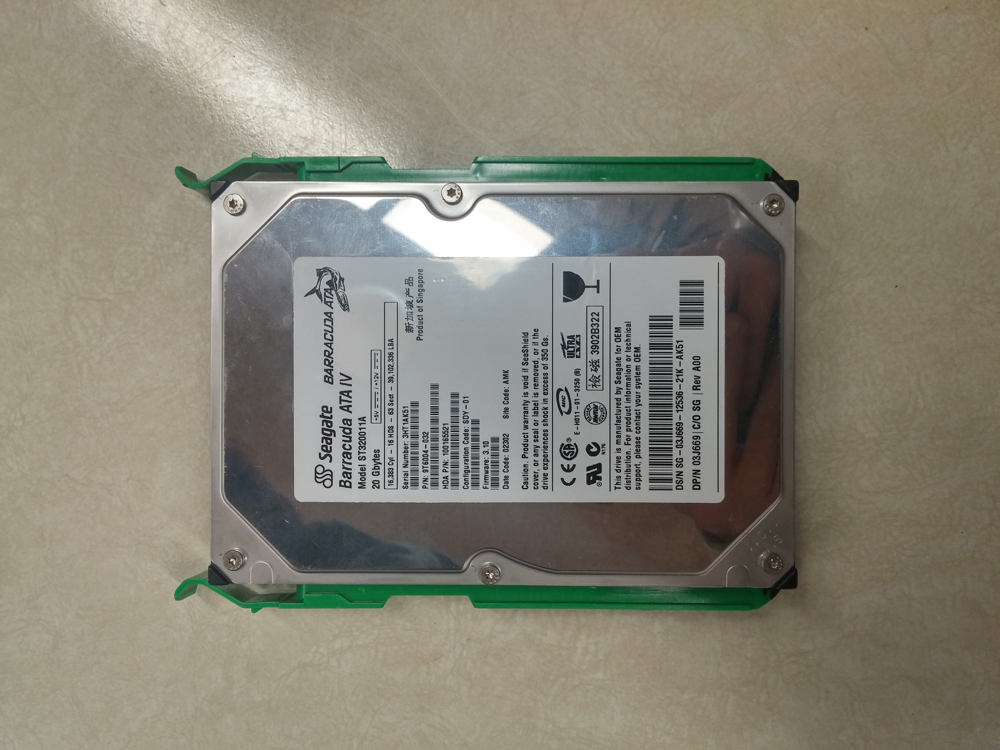

Also known as the microprocessor, the CPU (Central Processing Unit) carries out commands to allow the hardware components to perform actions. It controls executions of a computer and performs basic arithmetic and logical operations, and in addition, it can also process other data. Because the CPU executes millions of instructions every second by carrying out millions of electrical signals, a lot of heat is generated. A fan is installed to make sure the CPU does not overheat.
The harddrive is essentially what stores all the data(pictures,music,text documents, videos and files),, a hard drive can normally store up to 100gb of data and is usually no larger than the size of your hand.The”hard drive”or hard drive disk permanently stores and retrieves data,and continues to work when the computer is off, the hard drive’s data can be accessed from anywhere on the drive and is found in the computer case and is connected to the motherboard using an SCSI,ATA or a SATA cable.
The harddrive is essentially what stores all the data(pictures,music,text documents, videos and files),, a hard drive can normally store up to 100gb of data and is usually no larger than the size of your hand.The”hard drive”or hard drive disk permanently stores and retrieves data,and continues to work when the computer is off, the hard drive’s data can be accessed from anywhere on the drive and is found in the computer case and is connected to the motherboard using an SCSI,ATA or a SATA cable.
ROM is the Read-Only Memory. It provides permanent storage of information that has been programmed/written into the PC during the works at the factory when it was being made, the ROM continues to work even when the computer is off. ROM contains the information used when the PC is turned on or reset, in addition to many other commands
A video card controls what is output onto the display screen such as pictures, videos and the graphics of the computer. A video card is a circuit and uses its own memory and processing unit,it is attached to the mother board.Good video cards improve the graphics of your computer drastically,which is gamers use high performance video cards, this is even more necessary when playing 3D games
RAM is a temporary short term data chip that temporarily stores data, the contents on the RAM can be overwritten unlike the ROM. When the computer is turned off the ram loses its data, to prevent this you can send the data to the hard drive to save the data. Upgrading your ram can make your computers performance more effective. If ram fills up the excess data from the ram is sent to the hard disk
Most components of a computer like the CPU or ROM work very fast and use up a lot of energy as a result they produce a lot of heat. To prevent overheating and other problems these components need to be at a designated temperature to work best. The fan is what keeps the temperature stable and prevents it from overheating. The fan rotates producing cool air, by doing so this cools dows the computer components. There are several fans for different computer parts like the the case fan, the power supply fan, the CPU fan, and the Video card fan.

The power supply converts incoming electricity to 5V and 12V DC power required. The 5V DC power is used for powering up circuit board on the PC, and the 12V CS power is used for powering motor-driven devices such as the hard drive and CD-ROM.
The motherboard contains the principal components of the computer, some being the CPU, microchips, and connectors for input and output devices.. It is located on the bottom of the system unit. It connects the different components within a computer to allow communication between all the hardware components.

A port is a connection that connects a computer with an external or internal device. Internal ports connect devices within the computer like CD-ROM or the hard drive, while external devices connect the computer with device that are ouide of the computer like mice or printers. There are several different type of ports like serial ports, parallel ports,Small Computer System Interface Por(CSIS),Universal Serial Bus (USB) Ports. USB ports are the most commonly used between the other ones.
The BIOS, also known as the Basic Input/Output System, tells the computer what to do when it starts up. It is important for it to keep its memory when it is sup to turn the computer back on again. The BIOS also keeps its memory when the computer is switched off.